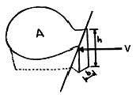
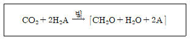
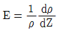
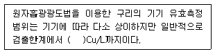
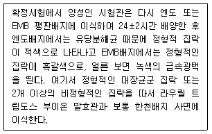
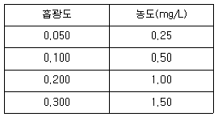
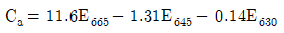
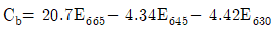
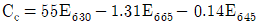

해양환경기사 (2019-04-27 기출문제)
1과목: 해양학개론
1. 세계 대양의 표층염분은 적도를 중심으로 위도에 따라 약간씩 차이가 있다. 다음 중 일반적인 표층염분 분포로 볼 때 가장 높은 곳은?
- 열대의 해양
- 온대의 해양
- 한대의 해양
- 아열대의 해양
(정답률: 78%)

2. 해수가 증발할 때, 염분이 증가함에 따라 화합물은 일련의 과정으로 침전한다. 그 중 첫 번째 침전물은?
- 석고
- 탄산칼슘
- 황산칼슘
- 돌로마이트(dolomite)
(정답률: 87%)
3. 해파가 해안에 접근할 때 파봉이 해안선에 평행하게 되는 현상은 무엇 때문인가?
- 간섭
- 굴절
- 반사
- 회절
(정답률: 89%)
4. 해저확장설에 대한 내용으로 틀린 것은?
- 해저는 확장되지 않고 소멸만 되고 있다.
- 대양의 화산섬들의 연령은 대양저산맥에서 멀어질수록 증가한다.
- 약 2억 ~ 2억 5천만년 내에 대양저지각의 완전한 순환이 일어난다.
- 대양저산맥이란 해저지각이 상승, 해저가 양쪽으로 확장하는 곳이다.
(정답률: 95%)
5. 태풍 통과 시 태풍 중심부의 해양표면수온은?
- 상승한다.
- 하강한다.
- 변화가 없다.
- 하강할 경우와 상승할 경우가 각각 절반정도이다.
(정답률: 85%)
6. 아열대 환류에 속하지 않는 해류는?
- 적도반류
- 북적도 해류
- 쿠로시오 해류
- 캘리포니아 해류
(정답률: 67%)
7. 좁은 해협(폭 b=100m, 수심 h=30m)으로 연결된 간단한 지형을 갖는 만(표면적 A=50km2)에서 반일주조(주기 T= 12.5시간)의 조차가 2.0m라 할 때 해협에서의 시간평균 유속 V는?

- 약 1.5m/sec
- 약 2.0m/sec
- 약 2.5m/sec
- 약 3.0m/sec
(정답률: 69%)
8. 석유가 매장되어 있을 수 있는 기본적인 지층구조 및 퇴적층이 아닌 것은?
- 사암
- 석회암
- 심해저 점토층
- 솔트 돔(Salt dome)
(정답률: 82%)
9. 염분을 측정할 수 있는 방법이 아닌 것은?
- 밀도 측정
- 색소 측정
- 염소량 측정
- 전기전도도 측정
(정답률: 84%)
10. 열점(Hot Spot)의 근원적 위치는?
- 약권
- 암석권
- 저속도층
- 하부맨틀
(정답률: 88%)
11. 해양의 표면염분 분포에 가장 큰 영향을 주는 것은?
- 바람분포
- 수온분포
- 심층해류
- 증발-강수량의 차
(정답률: 92%)
12. 지형류인 서안경계해류에 대한 설명으로 틀린 것은?
- 물이 차갑다.
- 유속이 빠르다.
- 연안용승이 없다.
- 멕시코만류가 해당된다.
(정답률: 76%)
13. 잔류 퇴적물(relict sediment)은 다음 중 어떤 현상에서 유래한 것인가?
- 태풍
- 조산운동
- 지진해일
- 빙하작용에 의한 해수면 변동
(정답률: 74%)
14. 용승(upwelling)에 관한 설명 중 틀린 것은?
- 저층의 물이 표면으로 올라오는 현상이다.
- 용승지역은 영양염과 먹이생물이 풍부하다.
- 연안에 평행한 바람이 불면 어디서나 용승이 일어난다.
- 적도용승은 에크만수송에 의한 표층수의 발산역에서 일어난다.
(정답률: 87%)
15. 지각에 분포하는 광물의 큐리온도(Curie point)는 대략 어느 정도인가?
- 250 ~ 450℃
- 450 ~ 600℃
- 600 ~ 750℃
- 1000℃ 이상
(정답률: 83%)
16. 해양열수지를 결정하는 인자와 관련이 없는 것은?
- 운열
- 잠열
- 현열
- 복사열
(정답률: 74%)
17. Thermosteric anomaly(△s,t, δT)200은 수온 0℃, 염분 35 psu의 해수에 비하면 해수가 얼마나 더 많은가?
- 100g 당 100ℓ
- 100g 당 200ℓ
- 1000㎏ 당 200㎖
- 1000㎏ 당 2000㎖
(정답률: 75%)
18. 망간각이 가장 많이 분포하고 있는 해역은?
- 인도양
- 북대서양
- 남동태평양
- 북서태평양
(정답률: 80%)
19. Kelvin파에 대한 설명 중 틀린 것은?
- 진행속도는 수심에 관계된다.
- 조석파가 전파될 때 나타난다.
- 지구자전의 영향으로 나타난다.
- 북반구에서 해면변화는 파의 진행방향에서 왼쪽이 제일 크다.
(정답률: 82%)
20. 저탁류를 3등분(머리-몸통-꼬리) 했을 때 어느 곳의 속도가 가장 빠른가?
- 머리
- 몸통
- 꼬리
- 전부 동일
(정답률: 84%)
2과목: 해양생태학
21. 저서생물의 유생기 이름이 아닌 것은?
- veliger
- nauplius
- copepodid
- pluteus
(정답률: 58%)
22. 암반 조간대 생물이 간조 시 수분 손실 방지를 위해 취하는 행동은?
- 바위에 부착하는 면적을 가능한 크게 한다.
- 패각의 표면을 매끄럽게 하거나 색깔을 어둡게 한다.
- 서로 밀착하여 서식하면서 패각이나 덮개판을 굳게 닫는다.
- 다른 부착생물들과 독립적으로 생활한다.
(정답률: 82%)
23. 온대지역 하구역 생태계에서 1차 생산자에 속하지않는 것은?
- 맹그로브
- 염습지 식생
- 잘피숲(거머리말)
- 식물플랑크톤
(정답률: 74%)
24. 온대해역에서 여름철에 기초생산이 저하되는 이유로 가장 거리가 먼 것은?
- 수온약층이 생긴다.
- 수온이 높다.
- 광선이 부족하다.
- 표층의 영양염이 고갈된다.
(정답률: 82%)
25. 부유생물의 부유적응이 아닌 것은?
- 긴 돌기를 갖는다.
- 군체를 이룬다.
- 체표면적을 작게 한다.
- 납작한 체형을 갖는다.
(정답률: 75%)
26. 다음 중 해양의 부영양화 현상과 가장 관계가 먼 오염물질은?
- 생활하수
- 농수축산 배수
- 분뇨와 쓰레기
- 방사성 폐기물
(정답률: 90%)
27. 대형 갈조류의 서식 요건이 아닌 것은?
- 단단한 기저부
- 맑은 물
- 높은 수온
- 풍부한 영양염
(정답률: 71%)
28. 바다 표면에 투사되는 광선의 강도와 유광층의 깊이를 결정하는 요인으로 옳지 않은 것은?
- 부유생물의 종조성
- 해역의 위도와 하루 중의 시각
- 물의 투명도
- 광선의 입사각
(정답률: 73%)
29. 조하대에 발달한 잘피군락에 대한 설명으로 틀린 것은?
- 연안생물의 은신처로서 기능을 한다.
- 파랑으로부터 연안역의 침식을 방지한다.
- 해양식물이므로 포자로 번식을 한다.
- 해양식물이지만 뿌리, 줄기, 잎이 분화되어 있는 고등식물이다.
(정답률: 77%)
30. 다음 해양생물 중 먹이망에서 중금속이 축적될 가능성이 가장 높은 무리는?
- 요각류
- 어류
- 규조류
- 단각류
(정답률: 79%)
31. 해양생태계에서 생물군집의 구성요소가 아닌 것은?
- 무기물을 산화하는 산화자
- 유기물을 생산하는 생산자
- 유기물을 소비하는 소비자
- 유기물을 분해하여 무기물로 환원하는 분해자
(정답률: 83%)
32. 어류 지느러미 중 추진력을 담당하는 지느러미는?
- 등지느러미
- 뒷지느러미
- 꼬리 지느러미
- 기름 지느러미
(정답률: 86%)
33. 지구상에 존재하는 가장 큰 생물로 알려진 대왕고래는 수염고래류에 속하며 이들은 커다란 입을 가지나 이빨이 없고, 술 장식의 고래수염(baleen)이라는 기관을 갖는다. 이 기관의 기능은?
- 음파를 받아들이는 기관이다.
- 호흡기관이다.
- 수중의 동물플랑크톤을 걸러낸다.
- 수중의 소리를 발생하는 기관이다.
(정답률: 90%)
34. 변삼투압성 어류에 해당하는 것은?
- 먹장어
- 칠성장어
- 고등어
- 전갱이
(정답률: 65%)
35. 유류오염이 해양생물에 미치는 피해에 대한 설명으로 옳은 것은?
- 일년생 해조류가 다년생 해조류보다 피해가 더 크다.
- 유출유처리제(유화제)의 독성에 의한 피해는 없다.
- 바다새에 유류가 흡수되면 보온기능이 강화되어 체온상승으로 죽는다.
- 어란 및 자치어에 영향을 주므로 전체 어류자원에 영향을 크게 준다.
(정답률: 69%)
36. 저서동물 유생의 해저 정착에 영향을 주는 요인과가장 관계가 먼 것은?
- 광합성 식물의 존재여부
- 성체로부터 나오는 유인물질
- 퇴적물 표면에 발달된 박테리아 피막
- 유생자신의 주광성과 배광성
(정답률: 75%)
37. 다음 중형저서동물의 종조성 비율 중 오염지표로 사용되는 것은?
- 패충류와 선충류의 비
- 선충류와 다모류의 비
- 선충류와 코페포다의 비
- 코페포다와 다모류의 비
(정답률: 75%)
38. 해양의 식물 기초생산을 나타낸 아래의 반응식에서A에 해당하는 것은?

- 산소(O) 또는 질소(N)
- 산소(O)
- 산소(O) 또는 탄소(C)
- 산소(O) 또는 유황(S)
(정답률: 86%)
39. 다음 중 해조류의 수직분포에 영향을 주는 가장 중요한 요인은?
- 광선
- 온도
- 파도
- 용존산소
(정답률: 78%)
40. 조간대에 서식하는 생물이 간출 시 열의 상쇄와 방출을 위해 여러 가지 적응을 한다. 이 적응에 관련된 설명으로 맞는 것은?
- 체적에 대한 체표면적을 줄이기 위해 몸을 작게 한다.
- 암반과 접촉하는 부위의 면적을 크게 한다.
- 패각의 색깔을 밝게 한다.
- 체내의 수분이 증발되지 않도록 한다.
(정답률: 77%)
3과목: 해양계측학
41. 심해저 망간단괴의 성장속도 측정에 사용할 수 없는 방사성 핵종은?
- 10Be
- 14C
- 230Th
- 231Pa
(정답률: 80%)
42. 동일한 지점의 깊은 곳과 얕은 곳에서 채취한 2개의 해수시료 온위(Potential temperature)가 같았을 때 이 두 개 해수의 현장온도(in situ temperature)는?
- 양쪽이 같다.
- 깊은 곳의 것이 더 높다.
- 얕은 곳의 것이 더 높다.
- 2개 해수시료 모두 온위와 값이 같다.
(정답률: 79%)
43. 다음 기기 중 연안에서 가장 정밀하게 위치를 측정할 수 있는 것은?
- DGPS
- LORAN
- DECCA
- Thermal scanner
(정답률: 72%)
44. 대기 및 구름상태와 해양수온관측을 주목적으로 발사된 인공위성은?
- SPOT
- NOAA
- NIMBUS series
- LANDSAT series
(정답률: 85%)
45. 인공위성에 의한 해양의 원격탐사에서 이용되지 않는 전자파 영역은?
- 감마선대
- 적외선대
- 가시광선대
- 레이다파대
(정답률: 75%)
46. 다음 중 해양 석유탐사 시 시추 후보지선정을 위한 지질구조 조사 등에 가장 효과적인 탐사방법은?
- 자력탐사법
- 중력탐사법
- 열류량측정법
- 지진파탐사법
(정답률: 80%)
47. 수압뿐만 아니라 기압도 같이 감지되고 유속이 빠른 곳에서는 동압력에 의한 압력 감소도 감지되는 조석 관측 기기의 형식은?
- 기계식
- 부표식
- 압력식
- 전기 저항식
(정답률: 81%)
48. 기기와 측정내용의 연결이 옳은 것은?
- 적외선 복사계 - 염분측정
- 마이크로파 고도계 - 수온 측정
- 마이크로파 복사계 – 염분 측정
- 마이크로파 산란계 – 해상풍 측정
(정답률: 74%)
49. 저질(低質) 조사를 위하여 채취한 시료의 최초 지지력(Initial rigidity)을 측정하는 장치는?
- Sedigraph
- Picnometer
- Viscosimeter
- Sediment Analyzer
(정답률: 62%)
50. SEASAT와 같은 위성이 ALT센서 시스템으로 바다의 수위나 파고를 측정하고자 할 경우 센서가 측정해야 할 요소는?
- 반사에너지
- 수중 감쇄 광량
- 전자파의 왕복시간
- 수중 후방산란계수(Back scatter coefficient)
(정답률: 81%)
51. 해저의 저질(低質)을 채취하기 위한 장비가 아닌 것은?
- Pinger
- Dredge
- Piston corer
- Grab sampler
(정답률: 86%)
52. 수심이 4000m인 해양에서 Tsunami가 발생하였다.이때 Tsunami의 위상속도는 시속 몇 ㎞인가? (단, 중력가속도 g = 10m/s2)
- 200m
- 250m
- 250㎞
- 720㎞
(정답률: 55%)
53. 풍파(wind waves)는 바람에 의해 발생하는 해양 표면파이다. 풍파의 파고와 주기를 결정하는 요소는?
- time, duration, area
- wind speed, time, fetch
- wind speed, duration, time
- wind speed, duration, fetch
(정답률: 84%)
54. 표류물에 의한 해류의 측정법이 아닌 것은?
- buoy에 의한 방법
- drogue에 의한 방법
- drift bottle에 의한 방법
- secchi disk에 의한 방법
(정답률: 78%)
55. 조화분석(Harmonic Analysis)에 대한 설명으로 옳은 것은?
- 자료의 상관관계를 분석하는 방법
- 특정주기의 진폭 및 위상을 구하는 방법
- 여러가지 관측자료를 조화시켜 분석하는 방법
- 연속관측 자료에 나타나는 주기별 에너지 계산방법
(정답률: 73%)
56. 해수의 안정도

에서 E=0 이면 어떤 상태인가? (단, Z는 아래방향으로 잰 거리, ρ는 해수의 밀도이다.)- 중립
- 상승
- 안정
- 불안정
(정답률: 70%)
57. 위도 30도에서 관성류(inertial current)의 주기는?
- 10시간
- 12시간
- 18시간
- 24시간
(정답률: 66%)
58. 다음 위성 탑재 센서 중에서 해수색을 측정하는 것은?
- IR
- TM
- CZCS
- AVHRR
(정답률: 77%)
59. 음파식(acoustic) 해류게에 다음과 같은 주파수가 이용될 때 해표면에서 가장 깊은 곳까지 관측되는 것은?
- 75 ㎑
- 150 ㎑
- 300 ㎑
- 600 ㎑
(정답률: 68%)
60. 각층 관측 시 Messenger를 wire rope를 따라 투하시킨 후 wire rope를 손가락으로 잡고 있는 주 이유는?
- 메신저가 잘 낙하하도록 하기 위해서
- 와이어로프가 선측에 가깝게 있게 하기 위해서
- 메신저가 고장을 일으켜 낙하하지 않는가를 알기 위해서
- 메신저가 채수기에 부딪치고 전도되는 충격파를 감지하기 위해서
(정답률: 85%)
4과목: 해수의 수질분석
61. 퇴적물의 화학적산소요구량(COD) 측정에 관한 사항 중 옳은 것은?
- 퇴적물 중의 총유기물 양을 나타내는 지표이다.
- 퇴적물 중에 난분해성 유기물질의 양을 나타내는 지표이다.
- 퇴적물 중에 유독성 유기화합물질의 양을 나타내는 지표이다.
- 퇴적물 중의 유기물질이 분해되면서 산소를 소모하는 유기물의 양을 나타내는 지표이다.
(정답률: 77%)
62. PCBs 분석을 위해, 해저퇴적물 중 PCBs를 염화메틸렌으로 추출, 농축한 후 방해물질을 제거하는 과정을 거친다. 이 때 사용되는 칼럼의 충진물로 적당한 것은? (문제 오류로 실제 시험에서는 2, 4번이 정답처리 되었습니다. 여기서는 2번을 누르면 정답 처리 됩니다.)
- C-18
- 실리카겔
- 무수황산나트륨
- 실리카겔-알루미나
(정답률: 71%)
63. 해수중의 용존유기탄소를 측정하는 방법과 관련 없는 것은?
- 킬달(Kjieldahl) 장치로 시료를 전처리 한다.
- 유효측정범위는 검출한계에서 100㎎/L 까지이다.
- 총유기탄소분석기는 적외선 검출기를 이용하여 검출한다.
- 시료중의 유기물을 완전 연소시켜 이산화탄소를 발생시킨 후 이를 측정한다.
(정답률: 66%)
64. 유출유 시료의 채취에 대한 다음 설명 중 틀린 것은?
- 유출유 시료는 시료상태에 관계없이 유리용기에 채취하는 것이 효과적이다.
- 기름에 의한 오염사고는 유출원으로 추정되는 오염 현장 주위의 기름 시료는 모두 채취하여야 한다.
- 시료가 미량이어서 직접 채취가 어려운 경우에는 유분이 함유되어 있지 않은 펄프섬유 같은 것에 흡착시켜 채취하여야 한다.
- 기름에 의한 오염사고는 유출된 기름의 성상, 지역의 특성, 자연조건의 변동 등을 고려하여 오염현장을 대표 할 수 있는 시료를 채취하여야 한다.
(정답률: 76%)
65. 해양환경공정시험기준상 Cu 정량 시 측정범위 및 정밀도에 관한 내용으로 다음( )안에 알맞은 내용은?

- 1 ng
- 10 ng
- 1 ㎍
- 100 ㎍
(정답률: 69%)
66. 대장균의 정성시험과정 중 한 시험과정의 일부를 소개한 것이다. 어떤 시험과정인가?

- 추정시험
- 배지시험
- 완전시험
- 최확수법
(정답률: 67%)
67. 기체 크로마토그래피 분석법 중 불꽃이온화검출기 (FID)로 검출하는데 다음 중 가장 적합한 것은?
- 페놀류
- 유기수은
- 탄화수소
- 잔류농약류
(정답률: 49%)
68. 크로로필 측정과 관계없는 파장은?
- 450㎚
- 540㎚
- 645㎚
- 750㎚
(정답률: 61%)
69. 유기인의 저장용 표준용액의 유효기간은?
- 7일
- 1개월
- 3개월
- 1년
(정답률: 59%)
70. Microtox bioassay 기법에 대한 설명으로 틀린 것은?
- 독성평가 방법 중 염수추출법은 공극수가 제거된 퇴적물을 대상으로 한다.
- 이 방법은 독성시험을 위한 제반 시료 및 장치가 상용으로 제조되어 있어 쉽게 습득 및 적용이 가능하다.
- 해양에 존재하는 발광성 박테리아인 Vibro fischeri의 발광 저해도를 측정하는 생물학적 독성 평가기법이다.
- 발광성 박테리아가 들어 있는 배양액에 시험하고자 하는 물질을 첨가한 후 30분 내에 나타나는 발광도의 차이로부터 해당물질의 독성을 측정한다.
(정답률: 68%)
71. 다음 중 염분(salinity, ‰)의 정의를 올바르게 설명한 것은?
- 해수 100mg 중에 들어 있는 염(salt)의 g 수이다.
- 해수 100mL 중에 들어 있는 염(salt)의 g 수이다.
- 해수 1kg 중에 들어 있는 염(salt)의 g 수이다.
- 해수 1L 중에 들어 있는 염(salt)의 g 수이다.
(정답률: 76%)
72. 윙클러법에 의한 해수중의 용존산소 측정에서 황산 을 가했을 때 망간의 원자가는 어떻게 변하는가?
- +2
- +3
- +5
- +7
(정답률: 63%)
73. 다음 중 흡광광도법에 의한 영양염류 분석 시 최대 흡수파장으로 잘못 연결된 것은?
- 인산 인 - 885㎚
- 규산 규소 - 810㎚
- 아질산 질소 - 543㎚
- 암모니아 질소 - 720㎚
(정답률: 63%)
74. 다음은 연안 해수시료를 1000배 희석한 후 원자흡수 분광법으로 칼슘농도를 측정한 결과이다. 해수시료의 흡광도가 0.080일 때 칼슘농도는? (단, 공시험값은 무시한다.)

- 400mg/L
- 600mg/L
- 800mg/L
- 1600mg/L
(정답률: 73%)
75. 해양환경공정시험기준에서 해수중의 구리, 납, 카드뮴 등을 원자흡광광도법에 의한 분석 시 유기착화제 (킬레이트)로 사용되는 것은?
- MIBK
- EDTA
- HDPE
- APDC/DDDC 혼합용액
(정답률: 83%)
76. 해양 퇴적물의 입도 분석 시 시료 중의 유기물을 분해제거하기 위해 사용하는 시약은?
- H2O2
- NaOH
- NH4Cl
- H2SO4
(정답률: 65%)
77. 선박의 방오도료로 많이 이용되고 있으나 최근Imposex현상 등 환경문제를 유발하여 세계적으로 규제하고 있는 유기주석 화합물을 분석하는 방법으로 잘못된 것은?
- 농축과정은 회전증발 농축기를 사용한다.
- 해수중에 들어 있는 것을 노르말헥산으로 추출한다.
- 광분해되거나 생분해될 우려가 있으므로 차광용기를 사용하여 빠른 시간 안에 분석해야 한다.
- 사용되는 시약 중 무수황산나트륨은 잔류농약용 시약을 450℃ 회화로에서 4~5시간 가열 후 120℃에서 보관하고 사용직전 상온에서 식혀 사용한다.
(정답률: 61%)
78. 해양환경공정시험기준상 수은(Hg)-냉증기 원자흡광광도법에 관한 설명으로 틀린 것은?
- 수은 중공음극램프가 필요하다.
- 유효측정범위는 일반적으로 검출한계에서 10.00㎍ Hg/L 까지이다.
- 유리제 흡수셀이 부착된 원광흡광분석장치가 필요하다.
- 측정원리는 해수시료중의 무기수은을 염화제일주석으로 환원시켜 금속수은으로 만든 다음 알곤기체를 불어넣어 수은포집장치에 포집한 후 냉증기-원자흡광광도계에 의해 253.7㎚에서 흡광도를 측정한다.
(정답률: 45%)
79. 해수중의 광합성 색소인 Chlorophyll a, b, c의 농도를 계산하는 아래 식에 대한 설명 중 잘못된 것은?



- Ca,b,c= Chlorophyll a, b, c의 농도(㎍/mL)
(정답률: 73%)
80. 해수 pH 측정을 위한 시료의 채수 후 측정시기로 가장 적절한 것은?
- 1일 이내
- 1시간 이내
- 한 달 이내
- 일주일 이내
(정답률: 77%)
5과목: 해양관련법규
81. 해양환경관리법상 해양오염방지설비와 관련된 정기검사에 합격한 선박에 교부되는 증서는?
- 임시항행허가서
- 기름오염비상계획서
- 화물선안전구조증서
- 해양오염방지검사증서
(정답률: 77%)
82. “폐기물 및 그 밖의 물질의 투기에 의한 해양오염방지에 관한 협약”에 대한 우리나라 가입일은?
- 1972. 12. 29
- 1993. 12. 21
- 1994. 01. 20
- 1996. 03. 16
(정답률: 65%)
83. 유류오염손해배상보장법상 국제기금 분담금의 부담자는?
- 유류 수령인
- 유조선 소유자
- 유조선 나용선자
- 유조선 정기용선자
(정답률: 51%)
84. 해양생태계의 보전 및 관리에 관한 법령상 회유성해양동물에 해당되지 않는 것은?
- 연어
- 뱀장어
- 고등어
- 동남참게
(정답률: 71%)
85. 해양오염방지협약(MARPOL 73/78) 규정상 기름기록부를 비치하고 기재할 의무가 있는 선박은?
- 길이 12미터 이상인 유조선과 24미터 이상인 일반 선박
- 길이 24미터 이상인 유조선과 48미터 이상인 일반 선박
- 총톤수 100톤 이상인 유조선과 총톤수 200톤 이상인 일반 선박
- 총톤수 150톤 이상인 유조선과 총톤수 400톤 이상인 일반 선박
(정답률: 78%)
86. 해양환경관리법상 오염물질의 유입·확산 또는 퇴적 등으로 인한 해양오염을 방지하고 해양환경을 개선하기 위해 해역관리청이 할 수 있는 해양환경개선조치가 아닌 것은?
- 오염된 퇴적물의 수거
- 오염물질의 수거 및 처리
- 오염물질 배출부과금 증수
- 오염물질 유입·확산방지시설의 설치
(정답률: 61%)
87. 해양환경관리법상 해양오염 방지설비 등을 선박에최초로 설치하여 항해에 사용하고자 할 때 행하는 검사는?
- 제조검사
- 정기검사
- 예비검사
- 임시검사
(정답률: 64%)
88. 해양오염방지협약(MARPOL 73/78)의 규정에 의하여 오수의 배출이 허용되는 경우는? (단, 4노트 이상의 속력으로 항해 중이며, 오수의 배출은 적당한 비율로 한다.)
- 저장탱크에 저장한 오수의 동시 배출
- 가장 가까운 육지로부터 10해리 거리에서 분쇄하지 아니한 오수의 배출
- 가장 가까운 육지로부터 10해리 거리에서 소독하지 아니한 오수의 배출
- 가장 가까운 육지로부터 4해리 거리에서 주관청이 승인한 장치를 사용하여 분쇄하고 소독한 오수의 배출
(정답률: 84%)
89. 해양환경관리법상 환경관리해역기본계획에 관한 설명으로 틀린 것은?
- 해양수산부장관은 환경관리해역에 대하여 해양관리해역기본계획을 3년마다 수립한다.
- 환경관리해역기본계획은 해양수산발전위원회의 심의를 거쳐 확정한다.
- 해양수산부장관은 환경관리해역기본계획이 수립된 때에는 이를 관계행정기관의 장에게 통보하여야 하며, 관계행정기관의 장은 그 시행을 위하여 필요한 조치를 하여야 한다.
- 해양수산부장관은 해역별 관리계획을 수립·시행하기 위하여 필요한 경우에는 관계 중앙행정기관과 지방자치단체 소속 공무원 및 전문가 등으로 구성된 사업관리단을 별도로 운영할 수 있다.
(정답률: 76%)
90. 해양환경관리법상 규제대상 물질이 아닌 것은?
- 폐유
- 폐기물
- 유해액체물질
- 방사성 오염물질
(정답률: 82%)
91. 유류오염손해배상보장법상 유조선 선박소유자의 책임제한에 대한 설명으로 틀린 것은?
- 모든 외국적 선박의 소유자에게도 책임제한 규정을 적용한다.
- 선박소유자 자신의 고의에 의한 사고의 경우에는 유류오염 손해배상책임을 제한받지 않는다.
- 유조선에 의한 유류오염 손해배상책임을 지는 유조선의 선박소유자는 해당 유조선에 의한 유류오염 손해 배상책임을 제한할 수 있다.
- 유조선의 선박소유자는 채권자로부터 책임한도액을 초과하여 유류오염 손해배상청구를 서면으로 받은 날부터 6개월 이내에 법원에 책임제한 절차 개시의 신청을 하여야 한다.
(정답률: 48%)
92. 해양환경관리법령상 해양오염방제업 및 유창청소업을 등록하고자 하는 자는 누구에게 등록신청을 해야하는가?
- 시·도지사
- 해양경찰청장
- 행정안전부장관
- 해양수산부장관
(정답률: 82%)
93. 유류오염손해배상보장법상 제한채권자가 그 제한채권에 대해 갖는 우선특권이 적용되지 않는 것은?
- 적재유류
- 사고선박
- 사고선박의 속구(屬具)
- 수령하지 아니한 운임
(정답률: 72%)
94. 해양환경관리법상 선박 검사의 종류 중 해양오염방지설비 등을 교체·개조 또는 수리하고자 하는 때에 받아야 되는 검사는?
- 임시검사
- 중간검사
- 정기검사
- 임시항해검사
(정답률: 71%)
95. 해양환경관리법상 선박 해양오염방지관리인 1인 이상을 추가로 임명해야 할 선박은?
- 석유탐사선
- 초대형급 유조선
- 해양과학 조사선
- 유해액체물질 산적운반 선박
(정답률: 74%)
96. 해양환경관리법상 기름의 해양유출사고에 대비하여 방제선 또는 방제장비를 배치 또는 설치하여야 하는 선박 또는 해양시설이 아닌 것은?
- 총톤수 500톤인 유조선
- 총톤수 1천톤인 유조선
- 총톤수 1만톤인 화물선
- 신고된 해양시설로서 저장용량 5천 킬로리터인 기름저장시설
(정답률: 62%)
97. 유류오염손해배상보장법에 관한 설명으로 틀린 것은?
- 유류오염손해에는 방제조치로 인한 추가적 손실 또는 손해도 포함된다.
- 유류오염손해를 경감하기 위한 제3자의 조치는 방제조치에 해당되지 않는다.
- “사고”라 함은 유류오염손해를 일으킬 수 있는 절박한 위험이 있는 사건을 말한다.
- 유류 및 다른 화물을 운송할 수 있는 선박에 산적유류의 잔류물이 있는 경우에도 유조선에 해당된다.
(정답률: 75%)
98. 유류오염손해배상보장법상 선박소유자에 대한 손해배상청구권에 관한 설명으로 옳은 것은?
- 유류오염손해가 발생한 날부터 1년 이내에 재판상 청구가 없는 경우에는 소멸한다.
- 유류오염손해가 발생한 날부터 3년 이내에 재판상 청구가 없는 경우에는 소멸한다.
- 유류오염손해의 원인이 되었던 최초의 사고가 발생한 날부터 3년 이내에 재판상 청구가 없는 경우에는 소멸한다.
- 유류오염손해의 원인이 되었던 최초의 사고가 발생한 날부터 5년 이내에 재판상 청구가 없는 경우에는 소멸한다.
(정답률: 76%)
99. 「1973년 선박으로부터의 오염방지를 위한 국제협약에 관한 1978년 의정서」 는 당해 국가에 발효한 날로부터 몇 년이 경과하면 당사국에서 탈퇴할 수 있는가?
- 3년
- 4년
- 5년
- 10년
(정답률: 74%)
100. 유류오염 대비·대응 및 협력에 관한 국제협약 채택일은?
- 1967. 12. 13
- 1973. 06. 09
- 1990. 11. 30
- 1995. ⑤. 1
(정답률: 67%)
해설: 아열대의 해양은 적도 지역에서 매우 높은 염분을 가지고 있으며, 이는 증발과 강류로 인해 염분이 농축되기 때문이다. 반면에 한대의 해양은 저위도 지역에서 높은 염분을 가지고 있지만, 아열대의 해양보다는 낮은 수준이다. 온대의 해양은 중위도 지역에서 가장 낮은 염분을 가지고 있으며, 열대의 해양은 아열대와 비슷한 수준의 염분을 가지고 있다.